Eventos en JavaScrip
Los eventos se pueden definir como cualquier cambio o suceso que ocaurra en la paguina desde el momento en que esta carga, en si, un evento puede ser desde el scroll del usuario por la paguina hasta presionar un boton, en sierto modo casi cualquier interacción con los elementos HTML se puede considerara un evento.
La utilidad de los eventos consiste en que se puede asignar un codigo mediante JavaScrip a un elemento, el cual se ejecutara en caso de que el elemento experimente un un evento definido.
Handlers
Se trata de manejadores de eventos, en el pasado llego a ser la forma predilecta en la que se manejaban los eventos javaScript, consistian en un indicativo del estado seguido del nombre del evento, por ejemplo "onclick"(no aplica el cameCase), sin embargo este metodo posee multiples problemas que hicieron que dejase de emplearse, por ejemplo genera un erro si el elemento en cuestión no acepta javaScript, o si el usuario desactiva el javaScript en el sitio, por lo que el codigo nunca se ejecutaria.
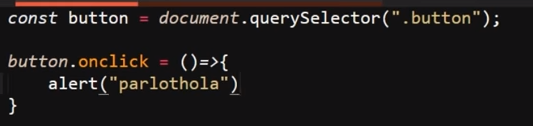
Debido a esto hoy en día existen mejores formas de trabajar los eventos de un sitio web por lo que el uso de estos recursos no es para nada recomendado.
Event Listeners (Escucha de Eventos)
Se trata de una propiedad que se le puede aplicar a un elemento HTML (recordar que se tratan como objetos), para lo cualse utiliza el nombre de la varible donde se almacena el elemento, seguido del punto (.)para vincular la propiedad, segido de la palabra clave "add" junto con el nombre de la propiedad "EventListener", luego entre parentesis ( ) se define el evento con el que se acionara el codigo, se usa una coma (,) como separador y luego se define el nombre de la función que se ejecutara en eñ evento.
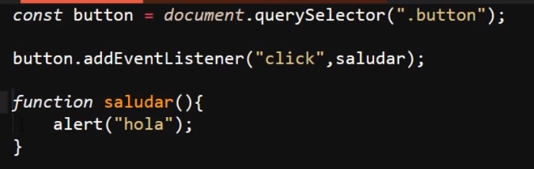
Por lo tanto la estructura de un "event listener" al ser aplocado a un elemento HTML recibe dos datos, el primero un string el cual es el nombre del evento seguido de la función que se ejecutara en este
Una particularidad de los "eventListener" es que estos no aceptan parametros como datos, unicamete funcionan al definirse el evento y su correspondiente función, del mismo modo que estos no eceptan las funciones flecha, por lo tanto es necesario definir sus funciones con la estructura tradicional.
Sin embargo existen una forma de que estos eventos acepten las funciones flecha, esto se logra definiendo la función flecha directamete dentro de los parentesis del "event listener", de la siguiente manera:
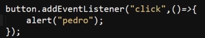
Una alternativa que ofrecen los "eventListener" es que pueden ser removidos en cualquier momento, para lo cual se remplaza la palabra clave "add" que se encuentra entes del nombre del metodo "eventListener"por "remove", queando de este modo:
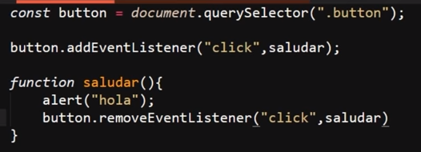
En este ejemplo se puede apreciar el como se elecciona un elemento HTML por su clase, luego se le aplica el "eventListener" con el evento "click" y la función "saludar", la cual a su ves remueve el evento del elemento una vez se ejecuta, por lo tanto al hacer "click" sobre el elemento este disparara una elerta, pero solo lo hara la primera vez, ya que una vez se ejecute la función esta removera el evento.
Nota: solo se puede remover el evento con las funciones asociadas, si se intenta remover desde una función que sea llamada por la función asociada no funcionara
Ejemplo
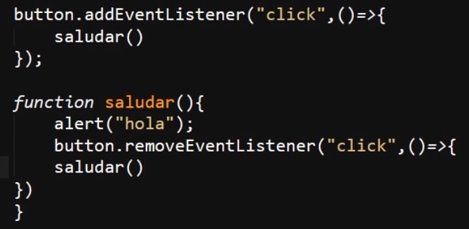
En este ejemplo la funcion saludar se ejecutara, sin embargo el evento no sera removido, por lo tanto se podra ejecutar una y otra vez en lugar solo poder hacerlo una vez tal y como se desea.
Objeto Event
Se trata del unico parametro que puede ser recibido por los "eventListener", el defnirse en lugar de la función se realiza la vinculación a este objeto, de ese modo se podra utilizar cualquiera de las Propiedades o metodos de este en el evento, para llamarlo se puede nombrar de la forma que se dese, ya que al ser el unico parametro posible sin importar el como se nombre al ingresarse el parametro este retornara el objeto "Event".
Ejemplo
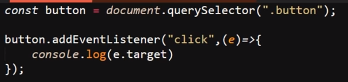
Resultado
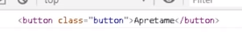
En este ejemplo se pude apreciar el como se utiliza una función flecha para ingresar el parametro a la función, de ese modo en un "console.log" se utiliza el metodo ".target", el cual es un metod del objeto "event" que retorna el elemento al que se le aplico el evento, por lo tanto lo que hace el evento del ejemplo es imprimer el elemento HTML en la consola.
Nota: en este ejemplo se nombro al parametro como "e" (de event), sin embargo se puede nombrar como se plazca ya que el objeto retorna por defecto, del mimo modo se puede usar cualquiera de los otros metodos o propiedades del objeto.
Event Flow (Flujo de Eventos)
Esto se refiere al orden en el que se ejecutan los eventos de un elemento padre y de un elemento hijo, por defeto javaScript cuenta con dos formas de organizar estos eventos:
-
Event Bubbling (Evento Burbuja): Se trata del orden por defecto de javaScript, consiste en ejecutar primero los eventos correspondientes a los elementos hijos, y luego los eventos de los elementos padre, de ese modo un evento del elemento hijo del elemento hijo se ejecutaria antes que este y así sucesibamente, siempre se empieza por el evento del elemento hijo de menor rango.
-
Event Capturing (Evento de Captura): Se trata del orden alternativo, consiste en ejecutar primero los eventos correspondientes a los elementos contenedores, segido de los eventos de los elementos hijos, de ese modo el evento del contendor de mayor rango se ejecutara primero que cualquier otro, y el orden ira decendiendo entre las generaciones de elementos hijos.
Para aplicar el flujo de evenetos de captura es necesario ingresar "true" como un tercer valor en el metodo "eventListener", por lo tanto para modificar el orden por defecto, se ingresa "true" despues del nombre de la función o de la función flecha, segun sea el caso, lo esencial es que este valor debe estar ingresado de ultimo.
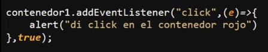
Nota: si existen más de dos eventos padres e hijos en una sola interacción se puede alternar el orden de los eventos ya que aquellos que posean el valor "true" definidos se ejcuetaran en base al flojo "capturing", mientras que aquellos que no conservaran el evento por defecto (bubbling), por lo tanto, todos quellos eventos que se desee que modifique su flujo por defecto se les debe indicar el tercer valor "true".
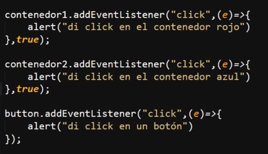
Nota: De ese modo tambien si solo se marca un unico evento con el valor True ese se ejecutara primero que cualquier otro.
StopPropagation
Se trata de una forma de indicar que cuando existan barios eventos padres e hijos en una misma interacción como en el ejemplo anterior la ejecución de estos se detenga luego de ejecutar el evento actual, es decir esta propiedad del objeto "event" para la propagación del evento al ser ejecutado.
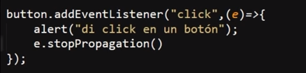
Nota: Todos aquellos eventos que se ejecuten antes utilizando el flujo "capturing" (añadiendo el tercer valor "true") no se beran afectados por este metodo.
Eventos del Mouse
Se trata de todos los eventos que pueden ser generados por el raton, así como cuando y para que se usan:
-
Click: Ocurre cuando se hace click sobre un elemento HTML
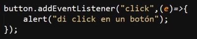
-
Dblclick: Ocurre cuando se da dos veces click sobre el mismo elemento en, menos de 0.5seg
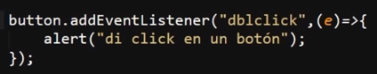
-
Mouseover: Ocurre cuando el mouse se mueve sobre un elemento o sobre uno de sus hijos
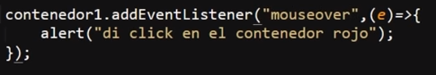
-
Mouseout: Ocurre cuando se mueve el mouse fuera de un elemento o de uno de sus hijos
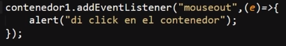
-
Contextmenu: Ocurre cuando se da click derecho en un elemento para abrir un menu contextual
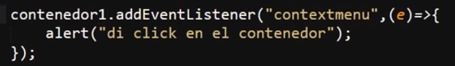
-
Mouseenter: Ocurre cuando el mouse se mueve sobre un elemento, con la diferencia de que este evento es especial para internet explorer, fuera de eso no se diferencia en nada
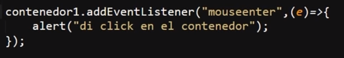
-
Mouseleave: ocurre cuando el mouse se mueve fura de un elemento, con la diferencia de que se actibara cuando el mouse deje el elemento, no a sus hijos
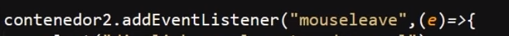
-
Mousedown: Ocurre cuando el usuario preciona un boton del mouse sobre un elemento
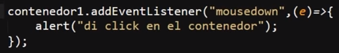
-
Mouseup: Ocurre cuando el usuario suelta el boton del mouse sobre un elemento
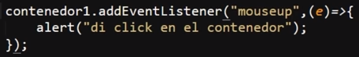
-
Mousemove: Ocurre cuando el mouse se mueve mientras esta sobre un elemento, por lo tanto mientras el mouse se mueva el evento seguira ejecutandose
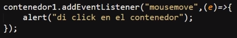